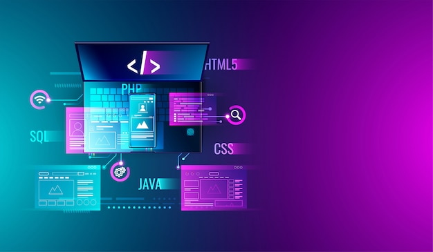
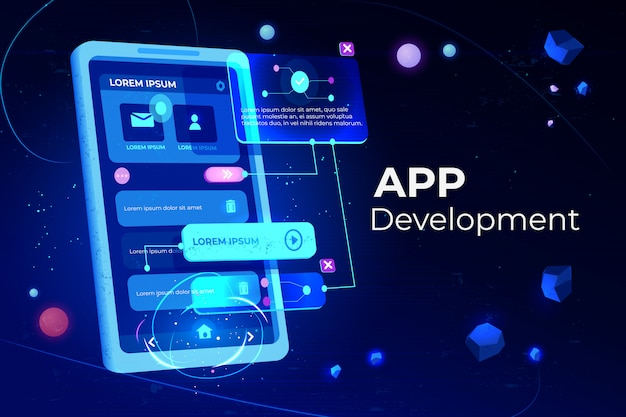
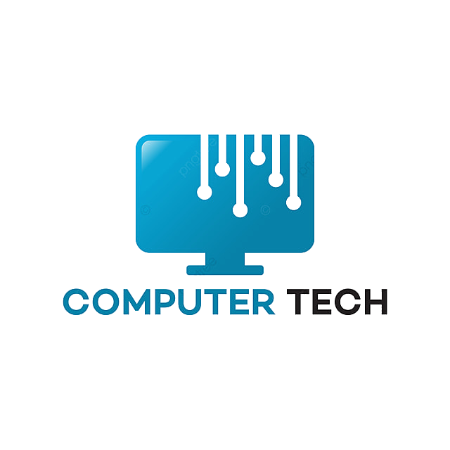

1 Le développement web
Langage et technologie utilisés: HTML/CSS, javaScript framework (react,Angulat,...). création de sites web interactifs et reactifs création d'interface utilisateur conviviales et accessibles. optimisatio des performances et des temps de chargement
2 Le développement mobile
Développement d'application pour android (java,Kotlin) ou IOS (swift) conception d'interface mobile conviviales integration de fonctionnalités matérielles et de capteurs Tests et déploiement d'application sur les boutiques d'application
3 Le développement logiciel
langage courants:
Java,python,C++ , C#..
Conception,développement
et
tests d'application logicielles.
utilisation
de
methodologie
de développement agiles collaborer
avec des equipes pour créer
des produits logiciels de qualité
L'intelligence artificielle
Concepts fondamentaux de l'IA
et de l'apprentissage automatique
Algorithmes d'apprentissage
supervisé, non supervisé
et renforcé utilisation de
bibliothèque populaires telles
que Tensorflow ou scikit-learn.
application de l'IA dans
divers domaines comme la
vision par odinateur et le
traitement du langage naturel
Reseaux informatique
(lan,wan,protocoles,..)
configuration
et gestion de routeurs
commutateurs et pare-feux.
Administration des serveurs et des systèmes
d'exploitation resolution
de
problèmes liés aux réseaux
et aux performances des systèmes
sécurité informatique
principe de la sécurité informatique
et des mécanismes de défense.
Identification des vulnérabilités
et
des menaces potentielles.
Techniques de sécurisation des Reseaux
et des systèmes ethique et
conformité en matière de securité
chat-gpt et machine learning
Les intelligences artificielles (IA) fonctionnent en utilisant des Algorithmes complexes qui leurs peremettent de traiter et d'analyser
de grandes quantité de données. l'apprentissage de l'IA se fait generalement par deux methodes principales
l'apprentissage supervisé et l'apprentissage non supervisé.
Dans l'apprentissage supervisé l'IA est entrainée sur un ensemble de données etiquetées, où elle apprend à associer des entrées à des sorties.
Par exemple pour la reconnaissance d'image, l'IA peut se former à reconnaitre des objets en se basant sur des images préalablement etiquetées
l'apprentissage non supervisé quant à lui , permet l'IA d'analyser des données sans etiquetes . elle identifiedes structures et des modèles cachés dans les données sans instruction
En outre il existe egalement l'apprentissage par renforcement où l'IA apprend en interagissant avec son envirronnement en recevant des récompenses pour des actions positives et des sanctions pour des actions negatives
fichiers pdf
.png)
A propos du développeur
Nouroumountaga ndao 18ans developpeur web HTML/CSS/JAVASCRIPT , programmeur pythgon
et formateur dans le domaine de l'informatique avec presque 2ans d'expérience dans ce domaine
Pourquoi ce site
j'ai conçu ce site web de A à Z pour aider les personnes souhaitant faire de l'informatique
à bien se situer dans ce domaine,l'informatique est un domaine en constante evolution donc ce site, est un site dynamique
c'est à sera constamment mit à jour pour ne pas rater les nouvelles avancées de la technologie
cependant le site doit etre bien entretenir pour eviter les attaques (piratage) et doit etre améliorer donc n'hesitez pas à me faire un don pourqu'on puisse améliorer et bien travailler notre site je vous accompagnerai tout au long de votre voyage dans le domaine de l'informatique en publiant souvent de nouvelles informations
ensemble construisons notre communauté de développeur GalsenTech envoyer moi un message pour nous rejoindre !
Numéro de téléphone (don): +221 78 184 30 73 orange_money/wave
MES FORMATIONS
--MasterClass HTML/CSS
--Ce vous allez apprendre:
--Apprendre les bases du developpemt web
--apprendre à créer des sites web interactifs
--créer des sites web epoustouflants
--vous serez guider de pas à pas
5000 Fr
vous avez toujours revé de donner vie à des projets pythgon incroyables
--Plonger dans l'univers fascinant de la programmation
--apprendre les bases du langage du pythgon
--apprendre à créer vos propres programmes
10 000 Fr
Ce que vous aurez en bonus
un site de portofolio (site de notre cv en informatique)
un convertisseur d'unité et d'un projet questionnaire (jeu quiz)